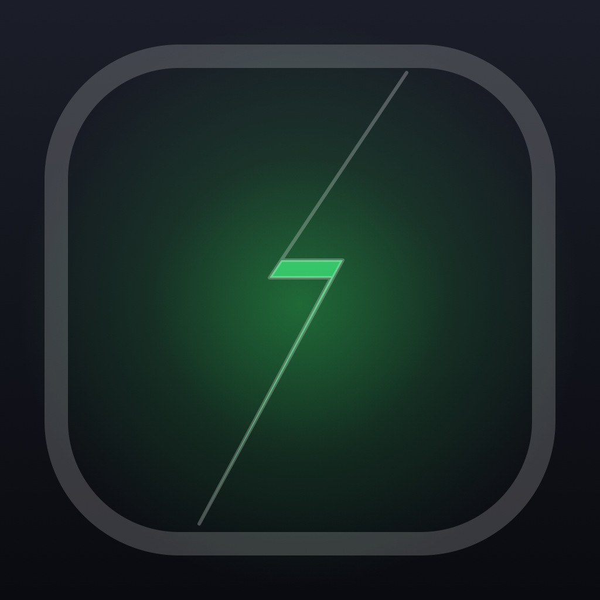

KeepFlow Cut
Keep the moments that matter.
Choose a video and play it once.
Hold KEEP during every moment worth saving.
Review, reorder, merge, and save your clips.
Frequently Asked Questions
How do I create a clip?
Choose a video, start playback, and hold the KEEP button for the part you want. Release the button at the end of the moment, then preview or save the marked segment.
Can I combine clips from different videos?
Yes. Save the moments you want to your project, open the project library, arrange the clips, and merge them into one video.
Where are exported videos saved?
Finished exports are saved to Photos in the KeepFlow Cut album. Your original videos remain untouched.
Why can't I open or save a video?
Open Settings > Privacy & Security > Photos, select KeepFlow Cut, and allow access. Also confirm that your device has enough free storage for the exported video.
Does editing require an internet connection?
No. Video editing and project storage happen locally on your device.
Contact Support
Include your device model, iOS or iPadOS version, and a short description of the issue.
Privacy
KeepFlow Cut processes videos on your device and does not collect your personal data. Read the Privacy Policy.